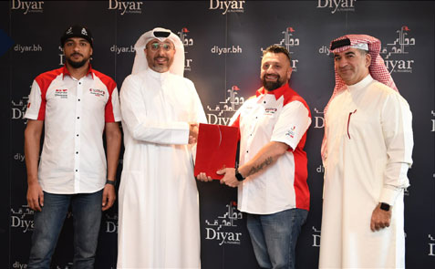

"ديار المحرق" الراعي الرئيسي لمعرض البحرين للاستثمار العقاري 2020
تحية طيبة من
"ديار المحرق"
نحن في "ديار المحرق" نؤمن بأن الإيجابية هو الأساس للتغلب على الأوقات الصعبة. نحن ومنتسبي "ديار المحرق" نتبع جميع الإرشادات الوطنية والتدابير الوقائية للحفاظ على سلامة الجميع.
يسعدني أن أقدم لكم الإصدار الثاني من نشرة "ديار المحرق" الإخبارية (ديارنا)، والتي ستمكن للجميع متابعة آخر أخبارنا، وأحدث تطورات المشروع.
تُعد "ديار المحرق" إحدى أكبر شركات التطوير العقاري في مملكة البحرين، كونها تطور مدينة حديثة متكاملة تمامًا، تتميز باحتضانها لمجتمع متكامل يضم مجموعة من المشاريع السكنية الرائدة، على سبيل المثال لا الحصر: "حيّ النور"، و"حيّ الشروق"، و"القمرة"، و"السدرة"، و"جيوان"، و"ديرة العيون"، و"النسيم" الذي يتضمن فلل سكنية فاخرة، و"البارح" الذي يمنحكم الخيار بين شراء فيلا ذات إطلالة مميزة أو قطعة أرض بأحجام مختلفة لتتلاءم مع احتياجاتكم، ومتطلبات أسركم، حتى تتمكنوا من تصميم منزل أحلامكم. تتميز جميع المشاريع المذكورة بإسلوب حياة راقي جاذب يتميز عن غيره، حيث تمكنت بتنوعها تلبية الاحتياجات والرغبات لدى العائلات والأفراد.
وعليه، فإننا نقدم أيضًا فرصًا سانحة للمشاريع السكنية والتجارية، بما في ذلك قسائم المباني السكنية، وقسائم الفلل التجارية، وقسائم المعارض التجارية، وقسائم المستودعات، حيث تنتشر هذه القسائم ضمن مواقع استراتيجية في أنحاء "ديار المحرق"، مما يساعد على استقطاب عدد أكبر من أصحاب الأعمال والمستثمرين والمتسوقين.
وقد بدأنا هذا العام بإنجازات كبيرة منها اكتمال جميع الأعمال الأساسية اللازمة لبدء البناء في مشروع "سوق البراحة" المرتقب والذي سيُعد إضافة رائعة وفريدة من نوعها لـ"ديار المحرق"، كونه سيشتمل على 468 متجرًا لخدمة احتياجات جميع القاطنين والزوار على حدًّ سواء. ويقع مشروع "سوق البراحة" في قلب "ديار المحرق"، ويتميز بفن معماري تقليدي معاصر، وبأجواء عائلية من شأنها أن تجذب الزبائن من كافة أنحاء "ديار المحرق" والمناطق الأخرى من مملكة البحرين عند إطلاقه في عام 2021.
وتهدف هذه النشرة الإخبارية أيضًا إلى تزويدكم بآخر مستجدات التطوير، بالإضافة إلى الشراكات الجديدة والمثمرة التي عقدت عام 2020، مثل توقيع اتفاقية تعاون مشتركة مع مؤسسة هشام عبدالرحمن جعفر "HAJ" لإدارة أعمال مشاريع التطوير العقاري، بما في ذلك فلل "البارح"، وتطوير الواجهة المائية لمشروع "النسيم"، ومشروع "ديرة العيون" السكني. بالإضافة إلى "حديقة الديار"، والمساجد، وأعمال البنية التحتية الأساسية.
أما أحدث التطورات، فقد تم الانتهاء من "حديقة الديار"، أكبر حديقة في "ديار المحرق"، وهي جاهزة للافتتاح بمجرد استئناف الأنشطة الإعتيادية. أما فيما يتعلق بتطورات المشاريع السكنية، فمن المتوقع أن يكتمل المشروع السكني "جيوان"، الذي يتميز بتصميم نموذجي و بأسعار مناسبة بنسبة 100% بحلول الربع الثاني من العام 2021، حيث سيتم الانتهاء من المرحلتين 1 و 2 في الربع الأخير من العام 2020، بينما من المتوقع أن يتم الانتهاء من المرحلة 3 بحلول الربع الثاني من عام 2021. وقد اكتملت البنية التحتية في مشروع "البارح" الواقع في شمال الجزيرة الجنوبية في الربع الثاني من عام 2020. وعلاوة على ما سبق، فقد اكتملت المرحلة الأولى من تمديد شبكة الصرف الصحي، وقد تم تشغيلها بالكامل في الجزيرة الجنوبية منذ تاريخ 30 أبريل 2020.
وإيمانًا منا بدور القطاع الخاص في دعم الإصلاحات التي يقودها جلالة الملك حفظه الله على كافة الأصعدة وترسيخ مبدأ الشراكة المجتمعية فقد تم التعاون مع فاعل خير لبناء أول مسجد في "ديرة العيون".
و في إطار الجهود المبذولة لمواكبة التطورات الرقمية، أطلقنا خدمة مستشار "ديار" العقاري عن بُعد، لتقديم خدماتنا للباحثين عن العقارات من منازلهم وبكل أمان، بالإضافة إلى تزويدهم بجولات افتراضية لكُلاً من فلل "النسيم" و فلل "البارح"، وخدمات مكتب التنسيق الفني عن بُعد التي تتيح لأصحاب العقارات الإستفادة من الخدمات المقدمة، مثل: طلبات تعديلات الفلل السكنية، والاجتماع عن بُعد مع مهندسي مكتب التنسيق الفني ودراسة التصاميم المبدئية والتفصيلية.
في أوقات معينة، قد نشعر أن الروتين اليومي يمنعنا أحيانًا من تحقيق أحلامنا الشخصية، لذا وخلال هذه الأوقات الحرجة المستمرة بمكافحة فيروس كورونا (كوفيد - 19)، فإني أحثكم جميعًا على استغلال هذه الفرصة للخروج من روتينكم المعتاد والعمل على تطوير ذاتكم سواء عن طريق تعلم مهارات جديدة، أو عبر ممارسة الرياضة للحفاظ على لياقتكم. ولأن صحتكم وسلامتكم هي أولويتنا، تم الانتهاء من بناء وتجهيز جميع مسارات المشي والجري و ركوب الدراجات، فهي جاهزة للاستخدام من قبل جميع المقيمين والزوار على حدًّ سواء.
نحن في "ديار المحرق" نؤمن بأن الأيجابية هو الأساس للتغلب على الأوقات الصعبة. نحن ومنتسبي "ديار المحرق" نتبع جميع الإرشادات الوطنية والتدابير الوقائية للحفاظ على سلامة الجميع.
بالنيابة عن "ديار المحرق"، أود أن أشكركم جميعًا على دعمكم المستمر وثقتكم بنا. ابقوا على اطلاع على أحدث تطورات مشاريعنا، عن طريق الاشتراك في النشرة الإخبارية عبر diyar.bh
نتمنى لكم قراءة ممتعة.
أطيب التحيات، المهندس أحمد العمادي
الرئيس التنفيذي
"ديار المحرق"
يعد مشروع "ديار المحرق" أحد أكبر المشاريع المدنية التطويرية في مملكة البحرين. يشتمل المخطط على مدينة متكاملة تبلغ مساحتها 12 كيلو متر مربع تقريبًا، تتألف من 7 جزر تغطي مساحة 10 كيلو متر مربع من الأراضي المستصلحة على السواحل الشمالية للمحرق. ويوفر مشروع "ديار المحرق" مزيجًا متماسكًا من المشاريع السكنية والاستثمارية، وذلك بهدف خلق مدينة تحقق الاستدامة للمستقبل وتسهم في تحقيق التنمية الاجتماعية والإقتصادية لمملكة البحرين. انضم إلى مجتمعنا الحيوي ومستقبلنا المشرق.
افتتاح "سوق البراحة" خلال
العام 2021
افتتاح "سوق البراحة" خلال
العام 2021
من شأن مشروع "سوق البراحة" أن يصبح الوجهة الأحدث والأكثر تميزًا للتسوق والترفيه العائلي الأصيل في البحرين، فهو متمركز وسط المجتمعات السكنية في وسط مدينة "ديار المحرق"، ويمتد على مساحة أرض إجمالية قدرها 64,202 متر مربع، وإجمالي المساحة المبنية والتي تقدر بأكثر من 20,000 متر مربع. وتتوفر مناطق قابلة للتأجير تمتد على مساحة أكثر من 13,000 متر مربع، وتضم حوالي 468 محل تجاري، وتتسع لإقامة 20 مكتبًا وحوالي 50 كشكًأ لتأجير ومناطق مخصصة لأجهزة الصراف الآلي، بالإضافة لتوفر مواقف للسيارات تتسع لحوالي 686 مركبة.
سيعكس تصميم مشروع "سوق البراحة" الطابع المعماري الفريد والثقافة العريقة لمملكة البحرين، حيث تم البدء بأعمال الأساسيات الرئيسية للمشروع في ديسمبر 2019 على أن تنتهي أعمال التطوير في الربع الأول من العام 2021 وأن يتم افتتاح "سوق البراحة" للجمهور الكريم في الربع الثاني من نفس العام.
سيضم "سوق البراحة" متاجر لبيع المواد الغذائية والمنتجات الطازجة مثل: سوق الأسماك الطازجة، وسوق الخضار والفاكهة، وسوق اللحم والدواجن، والسلع المنزلية، إلى جانب توفر محلات الخياطة وبيع الملابس والأقمشة، وأخرى لبيع المجوهرات والمشغولات الذهبية والمنتجات البحرينية من مواد غذائية وحرف يدوية. وسيحتضن السوق في محيطه أيضًا عددًا من المطاعم والمقاهي، فضلًا عن توافر مركز ترفيهي عائلي، ومحطة وقود، ومسجد، وسوبرماركت، ومكاتب، وغيرها من المرافق العامة.
تجربة تسوق فريدة من نوعها في
"ديار المحرق"
تتميز المجمعات التجارية في "ديار المحرق" بأنها فريدة من نوعها، مقارنة بما هو متوفر في السوق البحريني. وهذا يشمل "مدينة التنين البحرين"، الذي يُعد الأول من نوعه كونه يقدم مجموعة جديدة وواسعة من المنتجات الصينية الحصرية. وتمكن المركز من اجتذاب 34.5 مليون زائر من دول المنطقة، خلال الفترة ما بين يناير 2016 وحتى سبتمبر 2020.
بعد نجاح "مدينة التنين البحرين"، قمنا بالتخطيط لـ"مراسي جاليريا"، ليكون أحد أكبر مراكز التسوق في المملكة. بالإضافة إلى مركز "تاي مارت"، وهو أول مركز تسوق بين دول مجلس التعاون الخليجي مستوحى من تايلاند، وسيحتوي على أكثر من 120 مساحة للبيع بالتجزئة، وسيتم تدشينه في عام 2020. وختامًا، من شأن "سوق البراحة"، وهو مجمع تجاري ذو طابع تقليدي، أن يُثري تجربة التسوق في "ديار المحرق".
البنية التحتية لـ"ديار المحرق" مستدامة
ومصممة وفق معايير عالية
البنية التحتية لـ"ديار المحرق" مستدامة
ومصممة وفق معايير عالية
تُعد البنية التحتية لـ"ديار المحرق" نموذجًا حديثًا في الاستدامة، تتناغم بين التصميم الجمالي والمسؤولية البيئية.
وللحد من البصمة الكربونية، تم استخدام الصخور المحلية حيثما أمكن في عملية الاستصلاح، مما قلل من إنبعاثات الكربون الناجم عن النقل والشحن. وبالنسبة لحفظ الطاقة، قامت "ديار المحرق" بتركيب شبكة ري حديثة تتضمن ألواح شمسية مستدامة لتوفير الطاقة لبعض الصمامات الآلية ضمن شبكة التطوير بأكملها. وتم تحقيق المزيد من الاستدامة عن طريق تمكين جميع أصول خزانات الرَّي الفردية من التواصل مع الخزان المركزي الرئيسي، بحيث يتم ضخ المياه في النظام عند الطلب، مما يجعل استهلاك المياه أكثر كفاءة.
وفي الوقت نفسه، يتم دمج التقنيات الجديدة مع الهندسة التقليدية، حيث يتجاوز عمق المجاري 20 متر. كما قامت "ديار المحرق" بتركيب عدد من المجاري الإستراتيجية لمياه الأمطار في جميع أنحاء المدينة، من أجل توفير شبكة فعّالة للتخلص من مياه الأمطار في جميع أنحاء المدينة. وتعتمد كلتا الشبكتين - غير الميكانيكيتين - بالكامل على الجاذبية باعتبارها المحور الهندسي الرئيسي.
مشروع "النسيم"
يتكون مشروع "النسيم" من منطقتين، مجتمع مسّور ومجتمع غير مسّور ومتوفر للتملك الحر وغير مسوّر للتملك الحر، يمتد على مساحة 328,000 متر مربع تقريبًا ويطل على مناظر ساحرة للقنوات المائية والخارجية. يضم المشروع واجهة تسوق بحرية تتضمن عدد من أرقى المطاعم والمقاهي تمتد على مساحة 5 كم. يعد هذا المشروع أول حي مسوّر في "ديار المحرق"، حيث يضم أكثر من 300 فيلا مطلة على القناة وأكثر من 500 شقة مجاورة لمرافق البيع بالتجزئة والترفيه والاستجمام التي تبلغ مساحتها 13,000 متر مربع. ويتضمن المشروع أيضًا، متنزه متكامل ذو مسارات للمشاة، ومرسى يتسع لحوالي 100 قارب.
رسوم خدمة مجانية لمدة 3 سنوات
%30 دفعة مقدمة و 70% دفعة عند اكتمال المشروع
مشروع "البارح"
مشروع سكني للتملك الحر يطل على واجهة بحرية، يوفر 4 أنواع فلل ويقع في القسم الغربي من مشروع "ديار المحرق"، ويتألف من ثلاث أقسام رئيسية: قسائم أراضي سكنية مطلة على البحر مناسبة لبناء فلل راقية يسهل الوصول إليها برًا وبحرًا، وقسائم أراضي سكنية على مسافة قريبة من المنتزهات البحرية الخاصة ضمن مجتمع راقي، وقسائم أراضي سكنية صالحة للاستثمار التجاري مخصصة لإقامة مباني سكنية متعددة الطوابق. مشروع "البارح" متاح للتملك الحر لجميع الجنسيات، وسيشمل مجموعة من المرافق المجتمعية والمساحات الخارجية المذهلة.
قسائم أراضي المباني السكنية
توفر "ديار المحرق" قسائم أراضي مباني سكنية جذّابة تستهدف رجال الأعمال والمستثمرين. وتقع هذه الأراضي في موقع فريد بالقرب من المدخل الرئيسي لـ"ديار المحرق"، وهي مثالية لبناء المباني السكنية المكونة من 6 طوابق. تقع هذه القسائم في موقع استراتيجي مقابل "مراسى جاليريا" و بجوار "سوق البراحة"، و 3 مدارس وجامعة على مقربة من منطقة "ديار المحرق" التجارية، التي تضم "مدينة التنين البحرين" و"تاي مارت" وجامعة طبية بالإضافة إلى فندقين.
متوفرة للاستثمار الفوري
بدون رسوم تسجيل
قسائم المعارض التجارية
تقدم "ديار المحرق" تعريفًا مغايرًا لتجربة التسوق لأصحاب الأعمال والمستثمرين والمتسوقين، وذلك من خلال قسائم المعارض التجارية للتملك الحر المنتشرة في مختلف أنحاء المدينة. وتتميز هذه القسائم بمزايا عديدة أبرزها الموقع الاستراتيجي بوضوح وتواجدها في أماكن عبور الكثير من السكّان والزوّار، بالإضافة إلى إمكانية الوصول السهل إلى الطريق الدائري الأساسي في "ديار المحرّق". وتتوفر قسائم صالات العرض بأحجام مختلفة بحيث يبلغ معدّل مساحتها 2,400 متر مربّع تقريبًا، وتتمتّع القسائم الموجودة في هذا المركز التجاري المزدهر بأسعار ملائمة مع جودة بناء متطوّرة جدًا. وتهدف الخيارات الواسعة لمتاجر البيع بالتجزئة إلى استقطاب باقة من العلامات التجارية العالمية المتنوّعة ومتاجر تجزئة متعدّدة الأقسام ومجموعة مختلفة من الشركات الناشطة ضمن العديد من المجالات من بينها الموضة، التصميم الداخلي، السيارات، الإلكترونيات والبستنة. وكونها مدينة متكاملة تتمتع ببنية تحتية قوية، موفرة للمستثمرين فرصة لا مثيل لها لاستثماراتهم في "ديار المحرق".
قسائم المستودعات
توفّر "ديار المحرق" خيارات واسعة من قسائم التملك الحر للصناعات الخفيفة والخدمات اللوجستية والمستودعات ضمن منطقة ديار التجارية في الجهة الجنوبية الغربية من "ديار المحرق". تقع قسائم المستودعات في مدخل "ديار المحرق" وتتميز هذه القسائم بجاهزية البنية التحتية المتطورة وجودة المرافق ومساحات الأراضي المتنوعة التي تتراوح مساحاتها التقريبية من 1,641 إلى 2,046 متر مربع لتلبّي احتياجات جميع الأعمال وبأسعار تنافسية للغاية. تم تصميم هذه القسائم بحيث تكون موقعًا ملائمًا للخدمات اللوجستية والمستودعات والأنشطة التجارية المختلفة، مع شبكة طرق متطوّرة ومنافذ مباشرة تربطها بالشوارع الرئيسية لمملكة البحرين، ممّا يجعل هذه القسائم الخيار الأمثل للأعمال التي تحتاج إلى الدعم اللوجستي والمستودعات.
بدون رسوم تسجيل
متوفرة للاستثمار الفوري
قسائم الفلل التجارية
تقدم "ديار المحرق" الفلل التجارية بمساحات مرنه تتراوح بين 619 إلى 995 مترًا مربعًا، تتيح للشركات فرصة كي تتفرّد عن منافسيها، فإن هذه الوحدات التجارية توفر منصّة مثالية لمجموعة من مجالات العمل للانطلاق بأنشطتها بأسلوب مختلف، ومن ضمنها: صالونات التجميل، السبا، العيادات، المكاتب ومحلاّت الأزياء وغيرها. وبفضل إطلالتها على الطريق الدائري الأساسي في "ديار محرق" وقربها من الأحياء السكنية النابضة بالحياة في المشروع، فإن هذه الفلل ستستفيد من ميّزة أساسية تتمثّل بالموقع الذي يمكن رؤيته بوضوح من قِبَل العملاء والزبائن على السواء، إلى جانب توفّر ميّزة الوصول السهل إلى شبكة الطرق ومسارات المشاة والجري والدراجات الهوائية.
"مراسي جاليريا"
من "إيجل هيلز ديار"
"مراسي جاليريا"
من "إيجل هيلز ديار"
موعد التسليم المُقدر: يوليو 2021
إجمالي مساحة التأجير: 116,000 متر مربع
مناطق تسوق مميزة تتضمّن:
منطقة الأزياء
منطقة العلامات التجارية الفارهة
منطقة حفلات الزفاف والإعتناء بالصحة والسلامة
مراسي أكواريوم وحديقة الحيوانات المائية
5,700 موقف للسيارات
مطاعم ذات إطلالة مميزة على الشاطئ
توقيع شركة البحرين للسينما (سينكو) لإتفاقية تشغيل دور عرض "مراسي جاليريا"
"مراسي بوليفارد" في
"ديار المحرق"
يعتبر مشروع "مراسي بوليفارد"، تجربة فريدة لحياة عصرية رائعة لا مثيل لها. مجتمع حيوي رحب يضم أربعة مباني سكنية، تتراوح في الارتفاع من 6 - 10 طوابق، وتحتوي على 243 وحدة سكنية فاخرة بخيارات متعددة ما بين شقق استوديو إلى شقق بـ 3 غرف.
يضم مشروع "مراسي بوليفارد" 900 متر مربع من مساحات لمشاريع التجزئة، وسيكون المشروع مقابل وجهة التسوق والترفيه المميزة "مراسي جاليريا" وقرب الواجهة البحرية الساحرة.
"ديار المحرق" تجدد اتفاقية تعاون مع مؤسسة "HAJ"
أعلنت "ديار المحرق" عن تجديد اتفاقية تعاون مع مؤسسة هشام عبدالرحمن جعفر "HAJ" شهر مارس 2020. حيث تمتلك مؤسسة "HAJ" خبرة واسعة محليًا في إدارة المشاريع، وتوفر مجموعة شاملة من الخدمات الاستشارية والإدارية للشركات العاملة في قطاع التطوير العقاري.
تقدم شركة "HAJ" خدمات الصيانة اللازمة، وإدارة المشاريع مما تتضمن برمجيات البناء، وإدارة التصاميم، والإشراف ومتابعة إنجاز وتسليم وحدات البناء حسب المواصفات والمعايير المتفق عليها.
توفر مؤسسة "HAJ" إدارة أعمال التطوير لكل من مشروع فلل "البارح" والواجهة البحرية لمشروع "النسيم"، ومشروع "ديرة العيون" و"حديقة الديار"، والمساجد والمرافق المجتمعية، والبنية التحتية الأولية ضمن مخطط المدينة، بالإضافة إلى الاتصال مع شبكة توزيع الكهرباء (NETS)، ومحطة المحرّق لمُعالجة مياه الصرف الصحي، وشبكة مياه الصرف الصحي المُعالجة.
"ديار المحرق" توفر خدمات مكتب التنسيق الفني عن بُعد
أعلنت شركة "ديار المحرق" عن تقديم خدمات مكتب التنسيق الفني عن بُعد، التي تتيح لأصحاب العقارات الحصول على خدمات متنوعة حيث تمكن مُلاك العقارات من التواصل افتراضيًا مع أحد مهندسي مكتب التنسيق الفني من ذوي الخبرة لدى "ديار المحرق"، والإستفادة بمجموعة متنوعة من الخدمات التي يقدمونها، مثل: طلب إجراء تعديلات على الفلل السكنية، ومراجعة ودراسة التصاميم المبدئية والتفصيلية، ويمكنهم تنسيق ذلك بكل يسر وسهولة عن طريق إرسال بريد إلكتروني إلى TIO@diyar.bh لحجز موعد عبر الإنترنت مع مهندس من مكتب التنسيق الفني.
مع تقديم هذه الخدمة، تلتزم "ديار المحرق" بدعم شركائها الكرام من خلال فريقها المحترف، بحجز اجتماع افتراضي، من الأحد إلى الأربعاء من الساعة 8 صباحًا وحتى 4 عصرًا ومن 8 صباحًا وحتى 3:30 عصرًا يوم الخميس أو عن طريق زيارة diyar.bh.
"ديار المحرق" تُدشن خدمة مستشار "ديار" العقاري عن بُعد
أعلنت شركة "ديار المحرق" عن تدشين خدمة جديدة، وهي مستشار "ديار" العقاري عن بٌعد والتي تتيح للزبائن الحصول على استشارات عقارية افتراضية عبر الإنترنت. يمكن للزبائن استخدام هذه الخدمة للاستفادة من العروض المقدمة من "ديار المحرق"، بالإضافة إلى الحصول على قطعة الأرض أو الفيلا المناسبة وفقًا لاحتياجاتهم، وذلك ببساطة عن طريق اختيار التاريخ والوقت لحجز جلسة عبر الإنترنت مع المستشار، ويمكنهم الانطلاق في جولات افتراضية للإطلاع على فلل العرض لكل من "النسيم" و" البارح" الجميلة والفاخرة، من راحة منازلهم.
وبفضل هذه الخدمة الجديدة، سيتمكن الزبائن من حجز موعد افتراضي مع مستشار "ديار" العقاري عن طريق زيارة: https://bit.ly/2JrPDCm، والإنطلاق في جولات افتراضية.
"ديار المحرق" تعلن عن إكمال شبكة الصرف الصحي العميقة
أعلنت شركة "ديار المحرق" عن بدء تشغيل شبكة الصرف الصحي العميقة لمدينة "ديار المحرق"، وذلك ضمن المرحلة الأولى التي انطلقت بتاريخ 31 مارس 2020. وقد تم تشغيل شبكة الصرف الصحي العميقة للجزيرة الجنوبية بالكامل مع المرحلة الثانية، لخدمة جميع السكان بالجزيرة في 30 أبريل 2020.
تضم شبكة الصرف الصحي العميقة من خط يبلغ عمقه حوالي 25 مترًا تحت سطح الأرض وتشمل محطة ضخ في الجزيرة الجنوبية للمدينة 340 متر مكعب والواقعة بالقرب من مدخل المدينة، لتقوم بضخ مياه الصرف الصحي من منطقة التجميع إلى محطة الضخ الوسطى، وتوجيهه بعد ذلك عبر خط الصرف الرئيسي إلى منطقة الحد التي تبعد 6 كم عن "ديار المحرق"، وليصل بعدها لمحطة معالجة الصرف الصحي، مما يجعل شبكة الصرف الصحي معاصرة وحديثة وفعّالة للغاية ليستفيد منها قاطني "ديار المحرق".
تنفيذ فلل "جيوان" حسب الموعد المحدد
يٌعد مشروع جيوان في "ديار المحرق" جزءًا من مشروع "ديرة العيون" للسكن الاجتماعي والذي سيكمل حسب الموعد المحدد حيث يتم التشييد من قبل مؤسسة أحمد عمر للتجارة والمقاولات. وتتألف تصاميم فلل "جيوان" من 3 أنواع: الطراز العصري، والاستوائي والطراز الفرنسي، والكلاسيكي "آرت ديكو".
وقد باشرت الشركة بتشييد المرحلة الأولى لحوالي 173 فيلا في شهر نوفمبر 2018، بينما بدء العمل لتشييد 119 فيلا بالمرحلة الثانية في شهر أبريل 2019. ومن المتوقع أن تكتمل هاتين المرحلتين خلال الأشهر الأخيرة من عام 2020. وسيشمل إنجاز المرحلة الثالثة، بما في ذلك 160 فيلا وإكمال المرافق والخدمات بالمنطقة، حيث يتم العمل بها بوتيرة تفوق الجدول الزمني الذي وضعته "ديار المحرق"، ومن المتوقع أن تكتمل بحلول الربع الثاني من العام 2021.
بدء تشييد لحوالي 173 فيلا في شهر نوفمبر 2018
بدء تشييد حوالي 119 فيلا في شهر أبريل 2019
من المتوقع أن تكتمل حوالي 160 فيلا في الربع الثاني من العام 2021
معلم مميز بمساحة 1,217 متر مربع
يتسع لأكثر من 600 مصلي
استكمال البنية التحتية لتشييد مسجد "ديرة العيون"
من شأن مسجد "ديرة العيون" أن يصبح معلمًا مميزًا، حيث يتم تصميمه من قبل شركة المقاولون العرب، وهو يمتد على مساحة قدرها 1,217 متر مربع، ليسع ما يزيد عن 600 مصلي. وقد إكتملت أعمال البنية التحتية إيذانًا ببدء تشييد المسجد. وبناءً عليه، تم وضع حجر الأساس للمسجد يوم الأحد 12 يوليو 2020.
تمتلك شركة اوربا للمقاولات والصيانة، تاريخ حافل بالتميز في مملكة البحرين، وبسجل لامع في البناء يمتد لأكثر من 20 عامًا. تم مباشرة تجهيزات بناء المسجد في شهر مايو 2020 وبدأت أعمال البناء خلال شهر يوليو 2020 ومن المتوقع أن تكتمل بحلول الربع الأول من عام 2021.
"ديار المحرق" تعلن عن آخر المستجدات في مشروع "البارح"
تعلن شركة "ديار المحرق" عن انتهاء كافة أعمال البنية التحتية الأولية والثانوية لفلل "البارح" الواقعة في شمال الجزيرة الجنوبية لـ"ديار المحرق".
وتم التعاقد مع شركة داداباي للمقاولات لتتولى مسؤولية أعمال البنية التحتية بالمشروع، وقد باشرت العمل في منتصف فبراير 2019. ثم قامت "ديار المحرق" بتوسيع نطاق أعمال داداباي للإنشاءات، وإضافة بناء جميع أعمال البنية التحتية في منطقة "البارح"، ليتم الانتهاء منها بحلول نهاية عام 2020. وتتضمن أعمال الشركة توصيل شبكات الكهرباء والماء في جميع أنحاء المشروع، إلى جانب تركيب شبكة تصريف مياه الأمطار والصرف الصحي.
يضم مشروع "البارح" فلل سكنية متوفرة بنظام البيع للتملك الحر، تتراوح مساحاتها بين 484 و 944 متر مربع. وتم أيضًا إنجاز كافة الطرق وتزويدها بإضاءة الشوارع. كما أنه يجمع العديد من الميزات الفريدة، بما فيها إمكانية إضافة نظام المنزل الذكي، وتوافر عدادات كهرباء ذكية ومصابيح إضاءة "LED" موفرة للطاقة.
مساحات القسائم تتراوح بين 484 – 944 متر مربع
سيتم الانتهاء من أعمال البنية التحتية في منطقة "البارح" بنهاية عام 2020
"حديقة الديار" أكبر حديقة في "ديار المحرق"
المساحة 32,800 متر مربع
أكثر من 200 موقف للسيارات
منطقة الرياضة الخارجية
منطقة المتنزه
منطقة ألعاب الأطفال
منطقة الأنشطة الرياضية
ملاعب كرة القدم
ملعب لممارسة مختلف الألعاب الرياضية
منطقة رياضية خاصة لذوي الهمم
عربات الطعام
مسارات المشاة والجري والدراجات الهوائية
مسارات دائرية متكاملة تمتد على مسافة 16 كيلومتر
مساحة الرصف 64,000 متر مربع
إضاءة الشوارع المتكاملة: متوفرة على مدى 24 ساعة
الخطوط البيضاء توضح موقع مسارات المشاة والجري والدراجات الهوائية

"ديار المحرق" ترعى مشاركة الفريق البحريني الأول في رالي دكار بالمملكة العربية السعودية
قامت "ديار المحرق" برعاية الفريق البحريني المشارك في رالي داكار 2020، والذي انطلق بتنظيم من ويلز أوف أرابيا، بدءًاً من 5 إلى 17 يناير في المملكة العربية السعودية. إن رعاية "ديار المحرق" هو جزءًا من مساهمتها وجهودها نحو المسؤولية الوطنية. أقيم رالي داكار للمرة الأولى في المملكة العربية السعودية هذا العام، وكان المتسابق البحريني سلمان محمد أول مشارك من مملكة البحرين.
رالي داكار هو حدث سنوي مترقّب لدى جمهور واسع في جميع أنحاء العالم وبمشاركة منافسين من أكثر من 20 دولة. يٌصنّف السباق على أنه سباق التحمُّل، يستخدم فيه أنواع مختلفة من المركبات والدراجات المعدلة لتلبية المتطلبات على الطرق الوعرة، ويتواجه المشاركون في المنافسات ضد بعضهم البعض، في أصعب أصعب التضاريس الوعرة، على مسارات مختلفة طينية وصخرية ورملية وغيرها.
"ديار المحرق" الراعي
الرئيسي لمعرض البحرين للاستثمار العقاري 2020
جددت "ديار المحرق" رعايتها لمعرض البحرين للاستثمار العقاري كراعٍ رئيسيًا ل BREIX 2020، والذي عُقد في مجمع سيتي سنتر البحرين من 13 الى 15 فبراير.
قامت "ديار المحرق" في المعرض بتعريف شريحة أوسع من الجمهور بميزات وخصائص مشاريعها السكنية والتجارية المختلفة. قدم المعرض فرصًا للذين يسعون للاستثمار في مواقع استراتيجية لأغراض سكنية أو تجارية، والاستثمار في مشاريع التملك الحر. شمل شملت عرض مشاريعها الرائدة مثل فلل وقسائم البارح وفلل النسيم، بالإضافة إلى قسائم المباني السكنية، وقسائم الفلل التجارية، وقسائم صالات العرض التجارية، وقسائم المستودعات.
"ديار المحرق" ترعى الملتقى التحضيري للمؤتمر الدولي الثاني للاستدامة والمرونة
أعلنت شركة "ديار المحرق" عن رعايتها ومشاركتها في الملتقى التحضيري للمؤتمر الدولي الثاني للاستدامة والمرونة الذي قام على مدى يومين في فندق الريتز كارلتون البحرين بتاريخ 25 و 26 فبراير 2020. واستعرضت شركة "ديار المحرق" في رعايتها لهذا الحدث، التزامها بدعم مختلف الفعاليات ذات التأثير على مستقبل البناء وعلى قطاع التطوير العقاري بشكل عام، وذلك ضمن مساعيها للمساهمة بالنهوض بالقطاع وفتح آفاق اقتصادية واعدة لمملكة البحرين.
عقد المؤتمر تحت شعار "نحو تقنيات وابتكار في تصاميم البناء". يقدم الملتقى التحضيري للمؤتمر المثالي للاستدامة والمرونة، فرصة مثالية للحث على إيجاد وسائل وسبل واضحة لضمان التحوّل الجاد لمستقبل البناء والمباني المستدامة. ويهدف الملتقى لمواكبة التحولات الكبيرة الطارئة على قطاع البناء وتكنولوجيا التشييد العالمي، مما يعزز نمو قطاع التطوير العقاري وتحقيق أفضل النتائج للاقتصاد البحريني.
وشهد هذا الحدث المرموق مشاركة 12 أكاديميًا ومتحدثًا، ضمن 4 حلقات نقاشية، وورشتي عمل. وتجسد أهداف وطبيعة مخرجات دراسة الفهم الجيد لتحديات المستقبل وضرورة تكافل الجهود بين الجهات الرسمية ذات العلاقة وتشريعاتها وبين الأطراف الفاعلة في القطاع.
التحديثات الرقمية
التعقيم الأسبوعي للمكاتب
تأتي رعاية المجتمع كأولوية لـ"ديار المحرق"، حيث التزمت الإدارة بالتعقيم الأسبوعي للمكتب الرئيسي، ومكتب المبيعات ومكتب التنسيق الفني.
تعقيم الطرق
تعقيم الشوارع في"ديار المحرق" بالتعاون مع الإدارة العامة للدفاع المدني ضمن جهود المملكة في حملة التصدي لفايروس كورونا.
المسؤولية الاجتماعية
في شهر رمضان
تعاونت "ديار المحرق" مع جمعية حفظ النعمة خلال شهر رمضان المبارك ضمن مبادراتها في المسؤولية الاجتماعية.
كن جزءًا من مجتمع
"ديار المحرق"!
"ديار المحرق" هي بوابتك نحو مدينة حديثة متكاملة، تجمع بين عراقة وأصالة المحرق مع إطلالات خلابة على البحر، ومجتمعات سكنية، ومرافق ترفيهية، وتجربة تسوق مثيرة بمواصفات عالمية. انضم إلى مجتمع "ديار المحرق" وكن جزءًا من مدينة المستقبل.
اربحوا قسائم شرائية بقيمة 300 دينار بحريني
كل ما عليكم فعله لربح قسائم شرائية بقيمة 300 دينار بحريني من "مدينة تنين البحرين" هو الاشتراك في نشرتنا الإخبارية لتكونوا من بين 3 من الفائزين المحظوظين!
يرجى زيارة اموقعنا الإلكتروني للإشتراك في النشرة الإخبارية diyar.bh